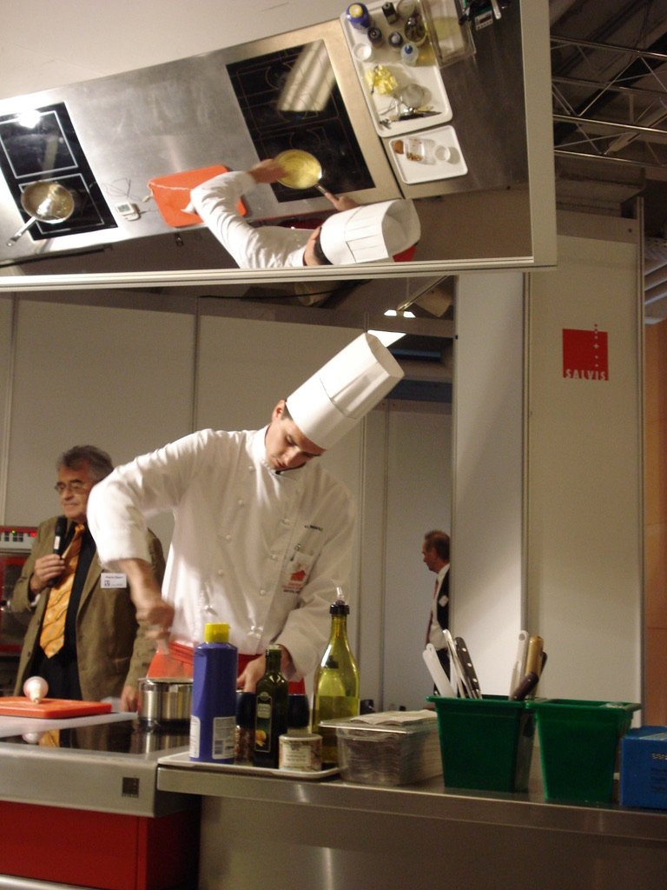
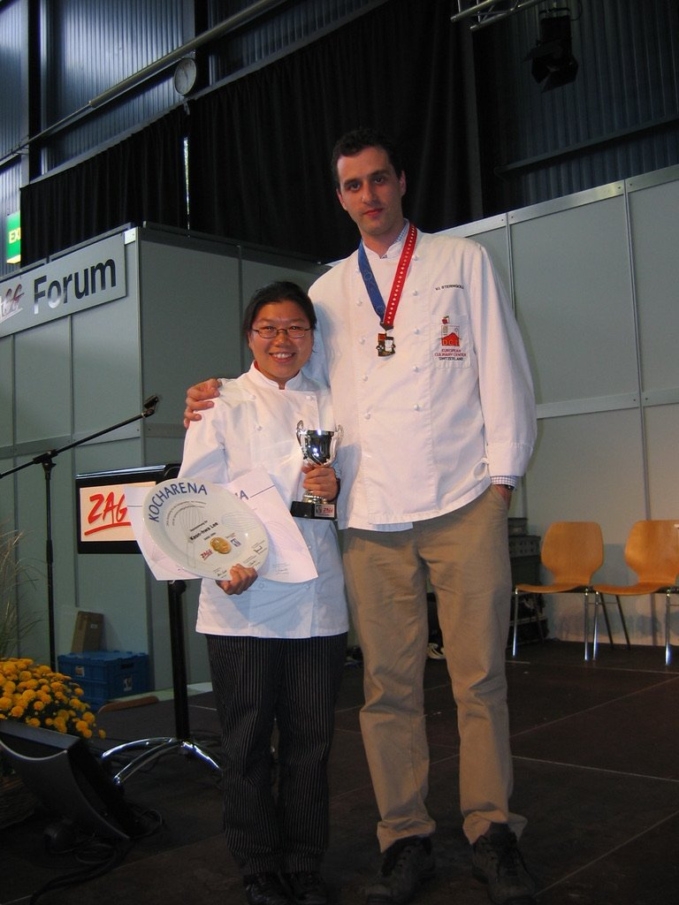
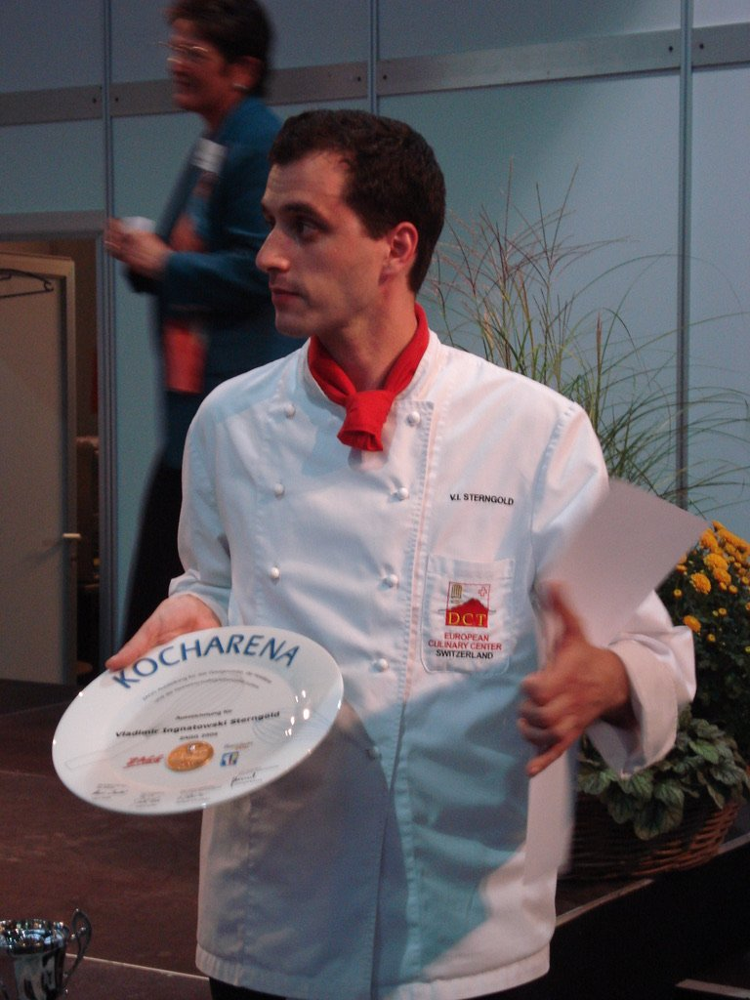

Before the Boardrooms
Seven years
in kitchens.
Before the Fortune 500s, before the data teams, before the steering committees — I cooked. Professionally. For seven years.
I came to the Netherlands with no Dutch, no network, and no plan. Kitchens don't care where you come from. They care if you can work.
Wagamama
— Amsterdam
DCT Culinary School
— Vitznau & Lucerne, Switzerland
Tschuggen Grand Hotel
— Arosa, Switzerland · 5★
🏆 Gold Medal
Restaurant Vijf
— Amsterdam
VandeMarkt
— Amsterdam
893 recipes
7 stations
248 photos